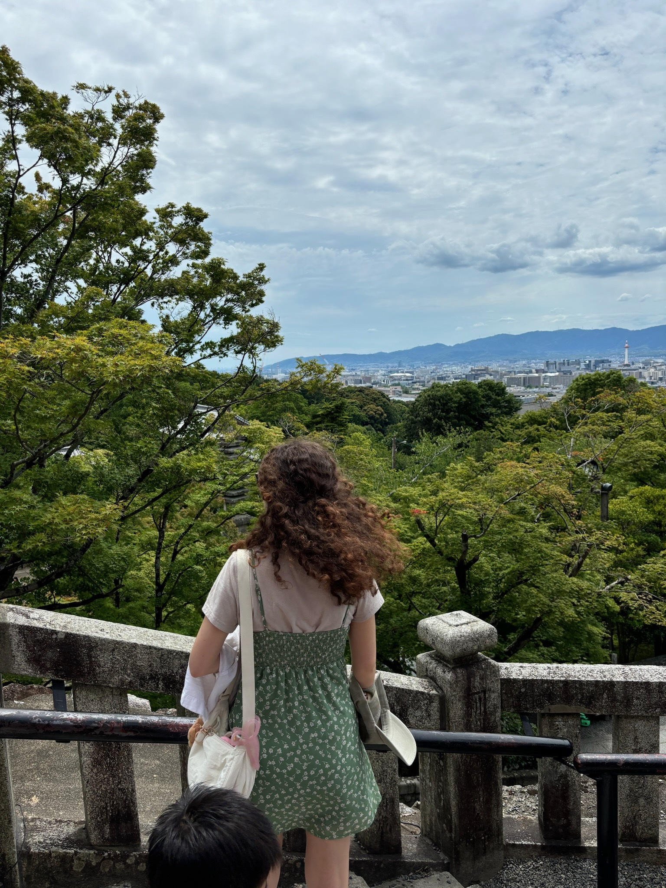
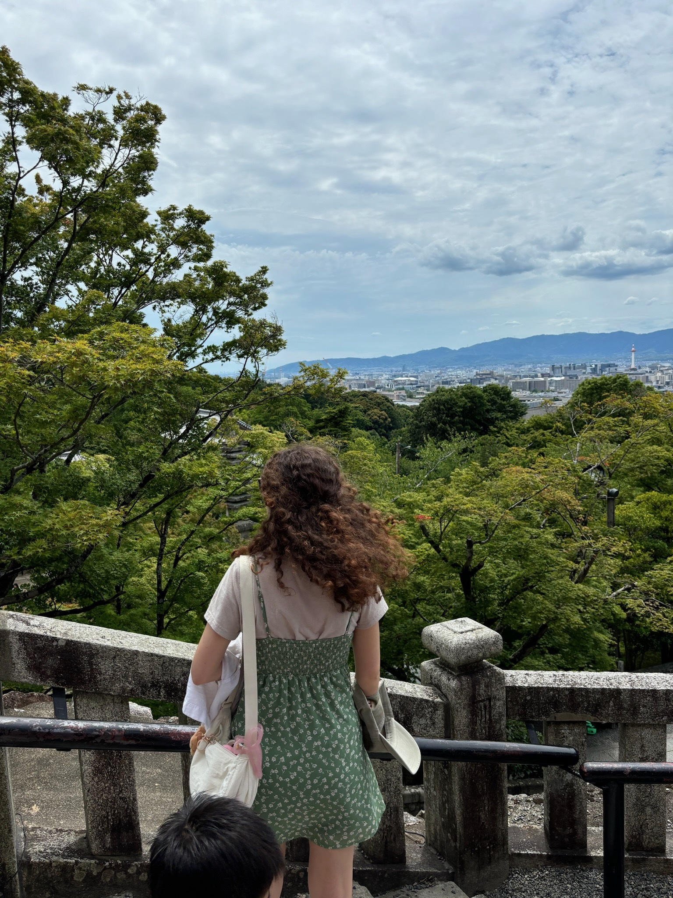

I'm Mary, an aspiring software engineer based in New York. I graduated from Princeton in May 2024 with a Bachelor's in Computer Science. Since then, I've been doing indpendent projects, learning new development skills, and exploring hobbies. Right now, I'm enhancing my web development skills, focusing on the fullstack. In previous jobs and fellowships, I researched novel security attacks that threatened confidentiality and integrity of sensitive data. I like exploring the concepts of lightweight web design, connectivity, tech ethics, and the impact of technology on society.
Skills: Java, Python, SQL, C, C++, Golang, HTML, CSS, Javascript, React


 
